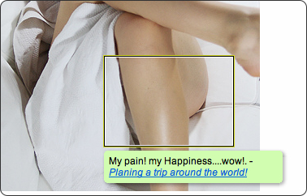
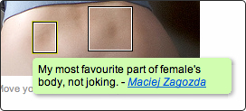
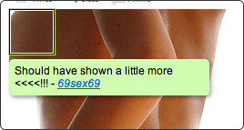
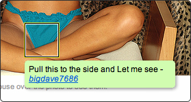
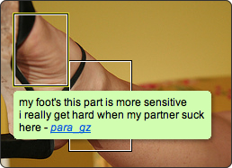
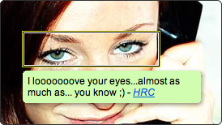
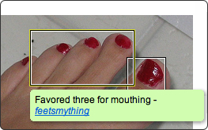

Flickr Notes: Gesammelte Kuriositäten
Wie jeder weiß, werden bei Flickr nicht nur die Fotos der letzten Familienfeiern und berauschende Landschaftsaufnahmen hochgeladen, es hat sich auch eine Freikörpersubkultur entwickelt.
Diese ist, wenn es darum geht Notes ((Rechteckige Markierungen auf dem Bild, um den speziellen Ausschnitt partiell zu kommentieren)) zu verteilen, so kreativ wie generös.
- 
Sein Schmerz, seine Freude. Was? Das verdammte Schienbein??
- 
Das mag übertrieben erscheinen, aber wie ich aus gut unterrichteter Quelle weiß, kann man dort prima seine Daumen ablegen. Das verbessert wohl den Halt ungemein.
- 
Wahrscheinlich wurde er als Kind zu sehr verwöhnt und hat nie gelernet, mit dem zufrieden zu sein, was er hat.
- 
Fragen kost' definitiv nichts. Ob sie seinem Wunsch nachgekommen ist, war leider nicht in Erfahrung zu bringen.
-
Ehrlich währt am längsten.
- 
Die Anhänger dieser Freikörpersubkultur zeichnen sich durch eine ausgeprägte Redseligkeit aus, sowie die Angewohnheit, pikante Informationen - die einem schon mal das Mittagessen verhageln können - in inflationärer Weise um sich zu werfen.
- 
Ausnahmen bestätigen die Regel. Dieser hier traut sich nicht zu sagen, dass er ihre Augen genauso gern mag, wie ihren selbstgemachten ungarischen Pansen-Stew. Liebe geht eben doch durch den Magen.
-
Was er damit sagen will ist, dass er ihre seidene Haut mag, und ihre anmutigen Rundungen, und dass er sie gerne einmal auf ein Tässchen Pfefferminztee mit Buttergebäck einladen würde.
- 
Wenn mir jemand eine Knarre an den Kopf halten und sagen würde: "Mouthe drei der fünf Zehen, oder ich drücke ab!", dann würde ich definitiv auch genau die drei nehmen.
Zum Schluss möchte ich kurz noch darauf hinweisen, dass ich auf der Suche nach diesen Absonderheiten sehr oft vor verschlossener Tür stand, aufgrund des Flickr'schen Jugendschutzsystems. Ich bin sehr dafür die Jugend zu schützen, aber bitte ohne die Alten zu nerven. Scheiß Flickr!
- Externe Links im selben Fenster öffnen
- Externe Links in neuem Fenster öffnen